17 Extreme Value Theory
17.1 Misc
- Packages
- CRAN Task View
- {erf} - able to extrapolate extimates beyond the training data since erf is based on EVT and is also flexible since it uses a RF
.resources/Screenshot (1395).png)
.resources/Screenshot (1396).png)
- video: from the 33min mark to 55:19
- Q(τ) is the desired quantile you want to estimate
- Q(τ0) is an intermediate quantile (e.g. 0.80) that can be estimated using a quantile RF (package uses {grf})
- Depends on thickness of tail (i.e whether the shape parameter is negative, 0, or positive)
- 0.80 tends to work reasonable well
- The higher the threshold you use, the less variance but higher bias
- Q(τ0) is an intermediate quantile (e.g. 0.80) that can be estimated using a quantile RF (package uses {grf})
- ξ(x) and σ(x) says the shape and scale parameters depend on the predictors. They’re estimated by minimizing a probability distribution’s log-likelihood which are multiplied by weights extracted from quantile RF.
- tune minimum node size, penalty term on the variability of the shape parameter
- cv using deviance metric for model selection
- {gbex} - no docs, only paper, gradient boosting for extreme quantile regression; able to extrapolate since they’re based on EVT
- {evgam} - Extreme Value GAM; able to extrapolate since they’re based on EVT
- {erf} and {gbex} peform better than regular quantile rf model types for quantiles > 0.80 (video: from the 33min mark to 55:19, results towards the end)
- Non-ML methods like {evgam} perform poorly for data with highh dim
- Why using Random Forest models that do NOT incorporate EVT usually don’t produce good results.
- Typical RF weighs every data point equally while a grf (see Regression, Quantile), depending on the quantile estimate, will weigh data points closer to the quantile more heavily
- Quantile Regression Forests work fine on moderate quantiles (e.g. 0.80) but even those like grfs struggle with more extreme quantiles because no matter how large the quantile you choose, the predicted quantile will be no larger than the most extreme data point. They use empirical methods and have no way to extrapolate.
17.2 Distribution Tail Classification
- Misc
- Notes from quantitative risk management lectures QRM 4-3, 4-4, https://www.youtube.com/watch?v=O0fdBwBRGU4
- Difference between tail events and outliers:
- Outliers tend to be extreme values that occur very infrequently. Typically they are less than 1% of the data.
- Tail events are less extreme values compared to outliers but occur with greater frequency.
- Tail events can be difficult to predict because
- Although not as rare as outliers, it’s still difficult to get enough to data to model these events with any sufficient precision.
- Difficult to obtain leading indicators which are correlated with the likelihood of a tail event occurring
- Prediction tips
- Consider binning numerics to help the model learn sparse patterns.
- Use realtime features
- Example: Predicting delivery time tail events
- unexpected rainstorm (weather data)
- road construction (traffic data)
- Example: Predicting delivery time tail events
- Utilize a quadratic or L2 loss function.
- Mean Squared Error (MSE) is perhaps the most commonly used example. Because the loss function is calculated based on the squared errors, it is more sensitive to the larger deviations associated with tail events
- Heavy tails
- Your random variable distribution is heavy tailed if:
- 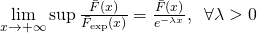
- where the exponential survival function, 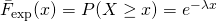
- Says if you take the ratio of your most extreme positive values (i.e. your survival function) at the tail (i.e. supremum)(numerator) and those of the positive tail of exponential survival function (denominator), then that ratio will go to positive infinity as x goes to infinity
- Or in other words, the probability mass of the pdf of your random variable in the tail is greater than the probability mass that of the exponential pdf
- Also means that the moment generating function is equal to infinity which means that it can’t be used to calculate distribution parameters
- 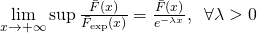
- Subsets of heavy tails
- Along with survival function ratio (see above), these tails have additional conditions
- long tails
- common in finance
- Your random variable distribution is long tailed if:
- it follows the explosion principle
- If an extreme event manifests itself, then the probability of an even more extreme event approaches 1
- no time prediction on the next more extreme event but extreme value theory + timeseries + conditions say extreme events tend to cluster
- Says, for example, if you take a huge loss in your portfolio, it’s a mistake to think that that value is an upper bound on losses or that the probability of an even larger loss is negligible
- If an extreme event manifests itself, then the probability of an even more extreme event approaches 1
- Not practical to determine from data
- it follows the explosion principle
- subexponential tails
- subset of long tail
- Your random variable distribution is subexponential tailed if:
- it follows the one-shot aka catastrophe principle aka “winner takes all”
-
- where Sn is a partial sum of values of your random variable; Mn is a partial maximum; x is a large value
- says at some point the partial sum, Sn , will be dominated by one large value, Mn
- Example: if your portfolio follows this principle, then your total loss can be mostly attributed to one large loss
-
- tools available to practically test
- it follows the one-shot aka catastrophe principle aka “winner takes all”
- Examples:
- log-normal
- can get normal parameters from lognormal parameters by formula that involves exponentiation (see notebook) or vice versa with logs
- all statistical moments always exist
- log-normal
- fat tails
- 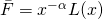
- L(x) is just characterized as slowly varying function that gets dominated by the decaying inverse power law element, x-α. as x goes to infinity
- α is a shape parameter, aka “tail index” aka “Pareto index”
- Examples
- pareto
- pareto has similar relationship with the exponential distribution as lognormal does with normal
- 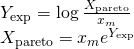
- xm is the (positive) minimum of the randomly distributed pareto variable, X that has iindex α
- Yexp is exponentially distributed with rate α
- some theoretical statistical moments may not exist
- If the theoretical moments do not exist, then calculating the sample moments is useless
- Example: Pareto (α = 1.5) has a finite mean and an infinite variance
- Need α > 2 for a finite variance
- Need α > 1 for a finite mean
- In general you need α > p for the pth moment to exist
- If the nth moment is not finite, then the (n+1)th moment is not finite.
- pareto
- 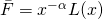
- Your random variable distribution is heavy tailed if:
- Light tails
- Opposite of heavy
- Instead of larger than pdf or survival function of the exponential version, it’s equal to or smaller than.
- i.e. your function decays as fast or faster as x goes to infinity as an exponential
- Examples
- exponential, normal
- Both
- class depends on parameter values
- Examples
- Weibull
.resources/84f3854e3b965f3558decf7fb93a14d6.jpeg){kind=link}
- Tests
- Notes
- All the plots below should be used and considered when diagnosing tails
- Can use the zipf and me plots to find the thresholds in the data where it would be useful to start modeling the data as pareto or lognormal
- Ask these questions
- Does the subject matter you’re modeling lead you to expect a certain type of tail?
- Example: Does the explosion principle hold or not?
- Is there an upper bound to your data (theoretical or actual)?
- Example: Is the upper bound due to the quality of the data
- Do I have over 10,000 observations?
- In the various plots below, it can be difficult to distinguish between Pareto (fat tail) and Lognormal (long tail) distributions. As a rule-of-thumb, usually takes 10K observations to really be able to tell the two apart in order to get enough data points in the tail.
- Usually get at least 10K observations in a market risk portfolio, but not in credit risk or operational risk portfolios
- Does the subject matter you’re modeling lead you to expect a certain type of tail?
- Q-Q plot
- exponential quartiles on the y-axis and ordered data on the x-axis
- See EDA >> Numeric >> Q-Q plot for code
- if data hugs the diagonal line –> exponential –> light tails
- if data is concave –> potentially heavy tails
- if data is convex –> potentially tails that are lighter than an exponential
- exponential quartiles on the y-axis and ordered data on the x-axis
- Zipf plot
- log-log plot of the empirical survival function of the data
- log of the pareto survival function makes it linear where the slope of the line is -α
- indicates if there’s a power law decay in the tails of the data (i.e. fat tails)
- results of this plot is “necessary” but not “sufficient” for confirmation of fat tails (pareto)
- It is sufficient to say it’s not a pareto if there’s curvature
- 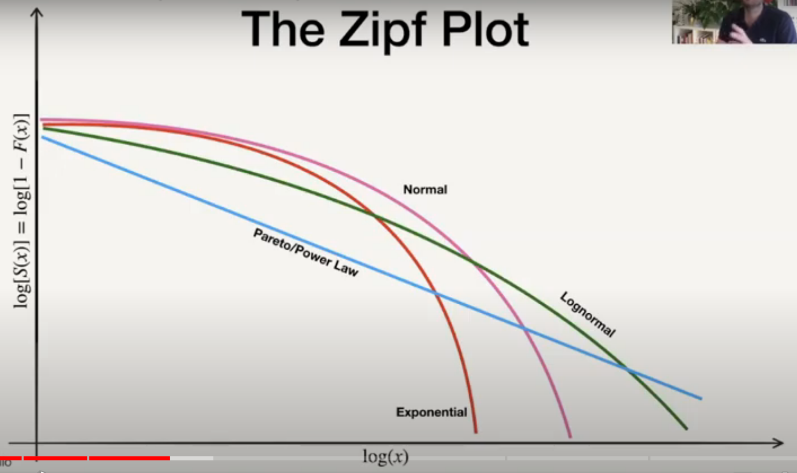
- 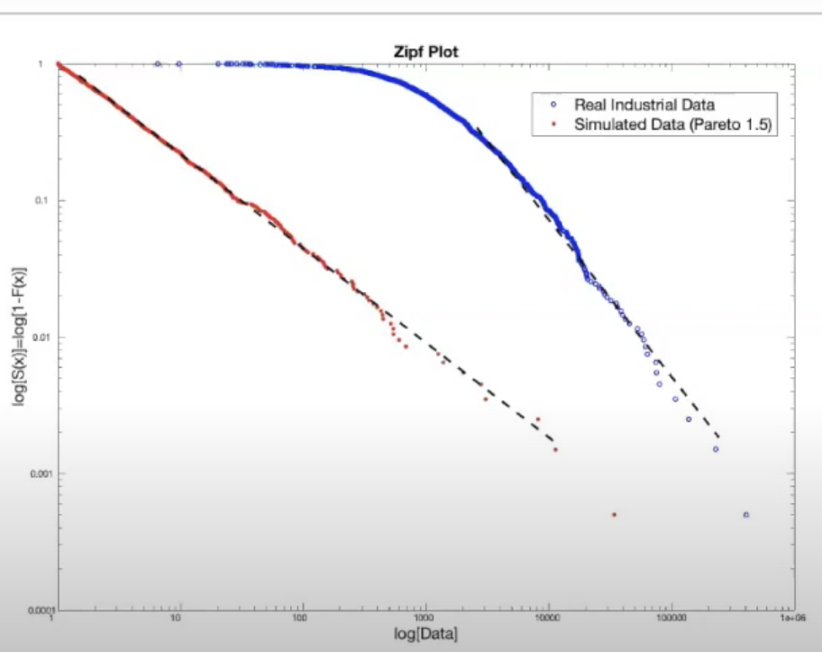
- The real data shows linearity at the very end, so even though it’s not linear from the beginning, it is still potentially fat tailed
- Real data often show mixed, complex behaviors.
- Also not that even in the simulated dataset, the data points at the end have some randomness to them and don’t fall directly on the line.
- the randomness is called small sample bias; usually not much data in the tails
- The real data shows linearity at the very end, so even though it’s not linear from the beginning, it is still potentially fat tailed
- 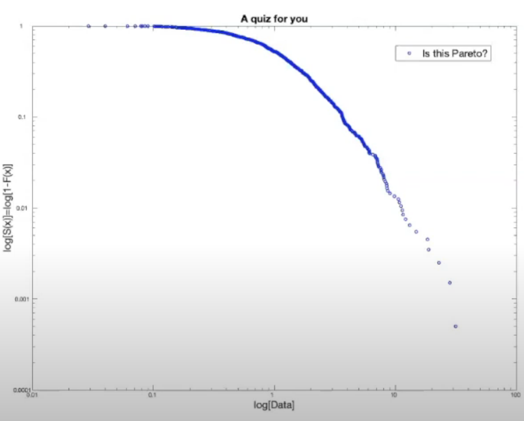
- log-normal can look like a pareto if its sigma parameter is large (small data). It will look linear and curve down at the very end.
- Example above shows lognormal with sd = 1, so sd doesn’t have to be very large to be tricky to discern from a Pareto.
- If the data has a smallish range (x-axis), then that is a signal to wary about deeming the distribution to having fat tails
- This one goes from 0 to 100 while the one above it goes from 0 to a million
- “Large” or “small” depends on the type of data your looking at though. In another subject matter, maybe 100 is considered large, so context matters
- 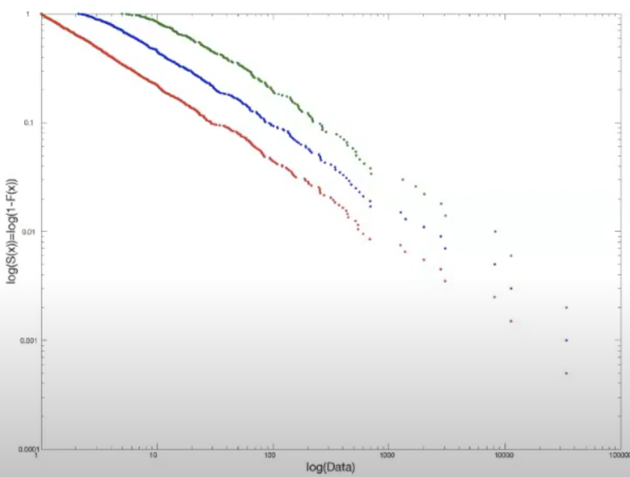
- Compare slopes between your original data (red) and aggregations of your data in a zipf plot; If you have fat tails, the line will be shifted because of aggregation but the slope, α, will remain the same
- Examples of aggregation methods (halves the sample size)
- Order data from largest to smallest; add a1 + an, a2 + an-1, …; plot alongside original data (green)
- Order data from largest to smallest; add a1 + a2, a3 + a4, …; plot alongside original data (blue)
- Examples of aggregation methods (halves the sample size)
- Compare slopes between your original data (red) and aggregations of your data in a zipf plot; If you have fat tails, the line will be shifted because of aggregation but the slope, α, will remain the same
- log-log plot of the empirical survival function of the data
- Mean Excess (ME) plot
Calculating the empirical mean excess variable - Order the data, calc mean2, remove the 1 data point, calc mean2, remove data points 1 and 2, calc mean3, and so on. Then plot the means
-
- lognormal is similar to pareto in this plot as well. The more data you have the easier it will be to distinguish the two.
- The left equation is for the lognormal curve (with Normal parameters) and the right equation is the pareto
- Need α > 1, so that the mean is finite
-
- Disregard last few points (small sample bias)
- Points in green circles (only a few points in tails, so difficult to be confident about)
- left: shows a straight line
- right: concave down
- Right plot: curvature at the beginning common in the wild, since you’re not likely dealing with pure distributions but some kind of noisy mixture
- Maximum to sum plot (MS Plot)
- 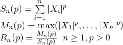
- S is the partial sum, M is the partial maximum, p is the order of the moment that you want to see if it exists or not
- For lognormal, all moments always exist
- For pareto, you usually only need to check up to p = 4 or p = 5
- For higher levels of p (and hence α) the pareto distribution begins to act like a normal
- Usually in credit, market, or operational risk markets you’re dealing with pareto 0 < α <= 3
- Procedure
- choose a p that you want to check
- for each n, calculate the sum, maximum, and ratio
- y-axis is the ratio, x-axis is the n value
- 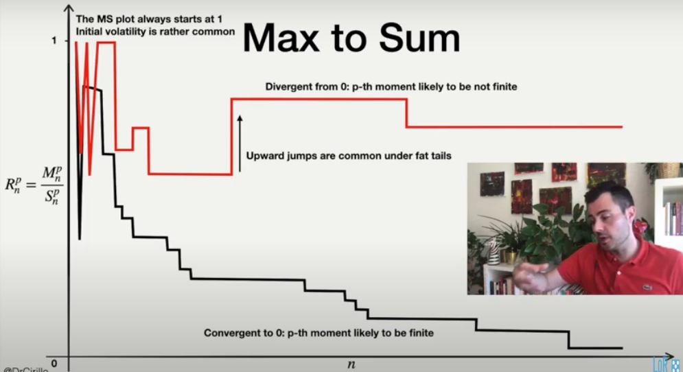
- A lognormal will always converge to 0 for every p you check (black line)
- When a moment doesn’t exist (i.e. infinite), it just oscillates and never converges (orange line)
- MS plots always start at 1
- Potentially with fewer than 100 observations, you could start to see a convergence if one is going to happen. Of course hundreds of observations is better. Point is that it doesn’t take thousands.
- Left - credit data (real estate losses), Right - operational loss data
- 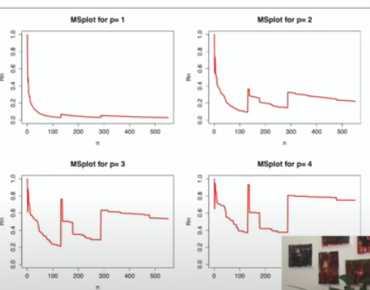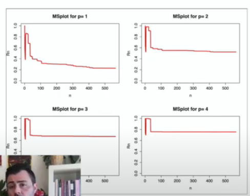
- Left
- p = 1 definitely exists; p = 2 is iffy; p = 3,4 don’t exist
- Interpretation: either α is between 1 and 2 or there aren’t enough observations to show a convergence
- Although n is pretty large in this case
- Right
- p = 1 is iffy, the rest don’t exist
- Interpretation: α might be less than 1
- Left
- 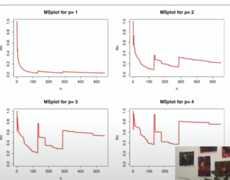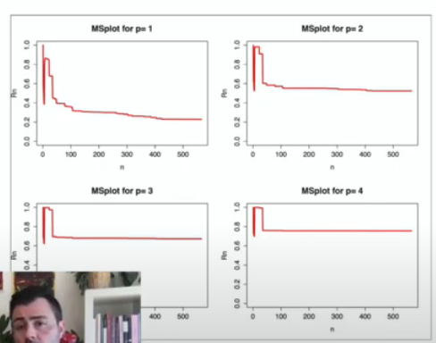
- Concentration Profile
- Requirements
- data >= 0 and mean is finite
- Similar to the Mean Excess plot, except the gini index is computed instead of the mean
.resources/concent-prof-distr.png)
- In the wild you can expect mixtures, so there will likely be noisy behavior in the beginning and when the fat tail is reached, a flat line is formed
- Requirements
- Notes
.resources/meplot-distr.png){kind=link}
.resources/meplot-real.png){kind=link}